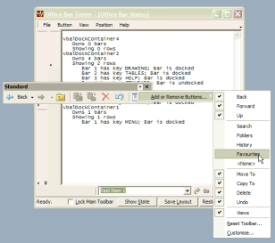
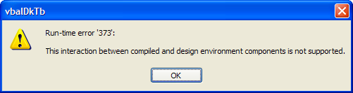

VB5 OfficeBar Binary (35K)
VB5 OfficeBar Binary (35K)
 VB5 OfficeBar Demonstration (68K)
VB5 OfficeBar Demonstration (68K)
 VB5 OfficeBar Full Source (138K)
VB5 OfficeBar Full Source (138K)
 VB6 OfficeBar Binary (35K)
VB6 OfficeBar Binary (35K)
 VB6 OfficeBar Demonstration (65K)
VB6 OfficeBar Demonstration (65K)
 VB6 OfficeBar Full Source (134K)
VB6 OfficeBar Full Source (134K)
 Bugs: 5 / 6
Bugs: 5 / 6
 Issues: 0 / 0
Issues: 0 / 0
 Questions: 0 / 0
Questions: 0 / 0
 5 Jul 2003
5 Jul 2003
Corrected Demonstration projects
Added note about IDE error when undocking
 vbAccelerator Toolbar and CoolMenu Control v3.5
vbAccelerator Toolbar and CoolMenu Control v3.5
 PopupMenu DLL - Create Unlimited Popup Menus
PopupMenu DLL - Create Unlimited Popup Menus
 Subclassing Without The Crashes
Subclassing Without The Crashes

vbAccelerator Office Docking Bar Control
Office XP style docking support for toolbars and controls
This control provides a new container for the vbAccelerator Toolbar and CoolMenu control which allows controls to be docked and undocked to the side of any form. It emulates the style of the Office XP toolbars and provides full support for saving and restoring the layout of the toolbars. It can also be used as a more flexible alternative to the Rebar control.
Before You Start
The demonstration project requires that you have the following controls installed and registered on your computer. The Toolbar and Popup Menu must be the versions posted 23rd April 2003 or later:
- vbAccelerator Toolbar and CoolMenu control
- vbAccelerator Popup Menu ActiveX DLL
- Subclassing and Timer Assistant
About the Office Docking Bar Control
The docking bar control is an alignable control which can be sited on any edge of a form. Once sited, you can specify if the control has a non-docking area (which can be used, for example, to hold a status bar at the bottom of a form) and then you can start adding bars to the control. Each bar can contain as single captured child-window, which would normally be a toolbar (although any control with a hWnd property can be added).
The docking bar can be locked so that none of the child windows can be rearranged or undocked by the user. This is the same as the "Lock Toolbars" mode offered by Explorer under Windows XP. It can also be set so bars cannot be undocked, in which case it operates in a similar way to a Rebar control.
For each bar that's added, you specify its correct size when docked horizontally and vertically and a key to identify the bar. Optionally, you can determine whether the bar should be added to an existing row or whether it should be inserted at the beginning or the end. You can also configure whether the bar should always fill an entire row, whether it can be closed when undocked, and whether it cannot be docked horizontally or vertically.
Once the initial configuration of bars has been created, you can Save the current layout and restore it back again at any time. This allows you to persist the state of the bars when your application shuts down and to restore them to exactly the same positions when the application is restarted.
The Control and The IDE
For reasons which I do not understand, you can only perform undocking once your application has been compiled into an executable. If you try to undock a toolbar whilst you are running in the IDE, you will get this error followed by a nasty crash:
The mysterious run-time error 373
There is no workaround for this at the moment. Just don't undock any toolbars in the IDE!
Using the Office Docking Bar Control
Using the docking bar control is fairly simple as you'll see from the demonstration, however, this article provides a detailed view of what's going on to provide a fuller understanding of how to configure your own application with the control.
There are six areas to cover:
- Configuring the Docking Controls
- Adding Bars
- Specifying the cXAHorz, cYAHorz, cYAVert and cYAHorz Parameters for Toolbars
- Saving and Restoring Layouts
- Other Methods and Properties
- MDI and SDI Considerations
1. Configuring the Docking Controls
The first thing to do to use the control is to add a docking container to each side of the form you want to allow docking on. Note that if you don't set the Align property of the control, it will not work properly - this is only an issue for SDI forms, since on an MDI form the control will automatically align itself.
Once you have a docking control at each edge you want to allow docking, consider whether you want to have a non-docking area in each. The non-docking area is a space closest to the edge of the window into which you can place other controls. An example of using the non-docking area is for a status bar at the bottom of a form. Obviously you can align a normal status bar to the bottom of the form separately, but it is difficult in VB to determine which order controls aligned to the edges of a form appear in. To set the non-docking area, set the NonDockingArea property of the control to True and then specify the NonDockingAreaSize in pixels. Once you've set this, you can drop any control onto the docking control to show in the non-docking area.
You can now determine if you want the control to draw in the Office XP style (the default) or using the older border style by setting the OfficeXpStyle property.
Now you are ready to add some bars to the docking container.
2. Adding Bars
Adding bars is achieved using the Add and Capture methods. The Add method creates a new bar, whilst the Capture method associates a child window with the bar. The Add method has a number of parameters so these will be covered here.
- key
Mandatory. A unique string which identifies the bar. This string must be unique across all docking containers. - cXAHorz
Mandatory. The width of the control when docked horizontally or undocked. If the bar is smaller than this when the item is docked then the chevron will indicate that some of the bar is hidden. - cYAHorz
Mandatory. The height of the control when docked horizontally or undocked. This is the minimum height of any row containing this control in the docked bar, and the height of the client area when the row is undocked. - cYAHorz
Mandatory. The height of the control when docked vertically. If the bar is smaller than this when the item is docked then the chevron will indicate that some of the bar is hidden. - cXAVert
Mandatory. The width of the control when docked vertically. This is the minimum width of any row which contains this control. - sTitle
Optional. The title to display when this bar is undocked. - lRow
Optional. The row to dock this bar to. Specify -1 to add the bar to the end, 0 to insert at the beginning or a row number of add to an existing row. The default is to add the bar to the end. - lX
Optional. The suggested position from the top or left of the docking container to position this bar at. If not supplied the bar will be shown as close to the top or left as possible. - cx
Optional. The suggested width (height when docked vertically) for this bar. If not provided, cXAHorz or cYAHorz will be used. - bFillRow
Optional. If set to True, the bar will occupy an entire row when docked and no other bars can share it's row. The default is False - bCanDockHorizontal
Optional. Specifies whether this bar can be docked horizontally. Defaults to True - bCanDockVertical
Optional. Specifies whether this bar can be docked vertically. Defaults to True - bCanClose
Optional. Specifies whether the bar can be closed when undocked. Defaults to True
Once you've added a bar, you can specify the control to be added to it. The Capture method takes the Key to a bar and the window handle (hWnd) of the control to be captured into the bar.
3. Specifying the cXAHorz, cYAHorz, cYAVert and cYAHorz Parameters for Toolbars
When adding toolbars to the control, there are two ways to specify these parameters, depending on whether the toolbar contains a control that can be stretched (such as a combo box) or not. If the toolbar can't be stretched, then this code is used:
ctlDock.Add _
"MYTOOLBAR", _
tbrStandard.ToolbarWidth, tbrStandard.ToolbarHeight, _
getVerticalHeight(tbrStandard), getVerticalWidth(tbrStandard)
Where the getVerticalHeight and getVerticalWidth functions are the ones provided in the demonstration:
Private Function getVerticalHeight(tbrThis As cToolbar) As Long
Dim l As Long
Dim lHeight As Long
Dim lMaxWidth As Long
Dim lRowHeight As Long
Dim lRowWidth As Long
lMaxWidth = getVerticalWidth(tbrThis)
For l = 0 To tbrThis.ButtonCount - 1
If tbrThis.ButtonVisible(l) Then
If tbrThis.ButtonControl(l) = 0 Then
If tbrThis.ButtonStyle(l) = CTBSeparator Then
' we'll start a new row for the next one
lHeight = lHeight + lRowHeight
lRowHeight = 0
lRowWidth = 0
Else
If (lRowWidth + tbrThis.ButtonWidth(l) > lMaxWidth) Then
' This button needs to go on a new row:
lHeight = lHeight + lRowHeight
lRowHeight = 0
lRowWidth = lRowWidth + tbrThis.ButtonWidth(l)
If (tbrThis.ButtonHeight(l) > lRowHeight) Then
lRowHeight = tbrThis.ButtonHeight(l)
End If
Else
' This button goes on this row:
If (tbrThis.ButtonHeight(l) > lRowHeight) Then
lRowHeight = tbrThis.ButtonHeight(l)
End If
lRowWidth = lRowWidth + tbrThis.ButtonWidth(l)
End If
End If
End If
End If
Next l
lHeight = lHeight + lRowHeight
getVerticalHeight = lHeight
End Function
Private Function getVerticalWidth(tbrThis As cToolbar) As Long
Dim l As Long
Dim lMaxWidth As Long
For l = 0 To tbrThis.ButtonCount - 1
If tbrThis.ButtonVisible(l) Then
If tbrThis.ButtonControl(l) = 0 Then
If (tbrThis.ButtonWidth(l) > lMaxWidth) Then
lMaxWidth = tbrThis.ButtonWidth(l)
End If
End If
End If
Next l
getVerticalWidth = lMaxWidth
End Function
Note that toolbar buttons containing controls such as Combo Boxes are hidden when the toolbar is docked vertically, like the Office XP docking toolbars.
3. Responding to Events from the Docking Container
Once you've added the bars, you can start responding to events from the dock container. There are five events; the ChevronPress event is the one you are most likely to want to respond to.
- ChevronPress(ByVal key As String, ByVal x As Long, ByVal y As Long)
This event is raised whenever a chevron is pressed, regardless of whether the control is docked or undocked. The key parameter tells you which chevron has been pressed, and the x and y properties provide the coordinates at which to show the chevron drop-down, relative to the screen in pixels.
If the bar contains a toolbar which has been created from a menu, then responding to this event is just a matter of forwarding the ChevronPress to the toolbar:
' Forward the ChevronPress: tbrMenu.chevronPress lX, lY ' The toolbar size may have been changed by making buttons ' invisible. Tell the docking container the new size: ctlDock.BandSizeChange _ "MENU", _ tbrMenu.ToolbarWidth, tbrMenu.ToolbarHeight, _ getVerticalHeight(tbrMenu), getVerticalWidth(tbrMenu) - SizeChanged()
This event is raised whenever the size of a docking container has just changed, either because a bar has been added or the bars have been rearranged. You don't need to do anything unless:
- You're using the controls in a SDI form, in which case the client area changes and you should resize the form.
- If you have a non-dockable area containing a control, and your docking container is docked right or bottom. In this case you need to adjust the top or left of the docked control so it is closest to the window edge of the control.
- Docked(ByVal key As String)
This event is raised whenever a bar is docked.
- Undocked(ByVal key As String)
This event is raised whenever a bar is undocked.
- BarClose(ByVal sKey As String, ByRef bCancel As Boolean)
This event is raised when the close button in an undocked bar is clicked. If you set the bCancel parameter to True the bar will not be closed.
4. Saving and Restoring Layouts
Saving and restoring a layout associated with any docking bar is achieved using XML. The Microsoft MSXML 3 parser (supplied with IE5.5 and above, downloadable otherwise) is used for XML serialisation and deserialisation.
To persist a layout to XML, you use the SaveLayout function of the docking bar control. This returns an XML string containing all the information needed to restore the layout of a bar. (Note: you should not modify the contents of this XML stream in any way since it represents the entire internal state of the control. Making changes to any of the data may have unpredictable results). If you have more than one docking bar control, you can place the results of more than SaveLayout call into the same XML document. Here is a code snippet from the demonstration which shows how to save the state of all the docking bars in the form and persist it to a file:
Dim sMsg As String
Dim ctl As Control
Dim ctlDock As vbalDockContainer
' Get the XML:
sMsg = "<Layout>"
For Each ctl In Me.Controls
If TypeName(ctl) = "vbalDockContainer" Then
Set ctlDock = ctl
sMsg = sMsg & vbCrLf & ctlDock.SaveLayout()
End If
Next
sMsg = sMsg & vbCrLf & "</Layout>"
' Persist to a file
Dim sFile As String
sFile = App.Path & "\layout.xml"
On Error Resume Next
Kill sFile
On Error GoTo errorHandler
Dim iFile As Integer
iFile = FreeFile
Open sFile For Binary Access Write As #iFile
Put #iFile, , sMsg
Close #iFile
To restore a layout, you essentially reverse the process by reading a previously stored XML layout and asking each dock control to restore itself using the RestoreLayout method. This method will take any XML string and search for the correct sub-tag to restore from.
The main difference is that you must also tell the docking controls about the toolbars and controls which should be captured into the new layout. To do this you pass in two arrays. The first array contains the keys which identify the bars, and the second contains the window handles to the toolbar or control you want to capture into the bar for each key. The two arrays must have exactly the same dimensions.
Here's a snippet of code from the demonstration project for restoring the layout from a previously saved file:
' Read the saved XML Layout:
Dim sFile As String
sFile = App.Path & "\layout.xml"
Dim iFile As Integer
iFile = FreeFile
Open sFile For Binary Access Read As #iFile
Dim sXml As String
sXml = String(LOF(iFile), " ")
Get #iFile, , sXml
Close #iFile
' Set up an array of Keys and their associated
' window handles:
ReDim sKey(1 To 6) As String
Dim hwnd(1 To 6) As Long
sKey(1) = "MENU": hwnd(1) = tbrMenu.hwnd
sKey(2) = "STANDARD": hwnd(2) = tbrStandard.hwnd
sKey(3) = "UTILITY": hwnd(3) = tbrAddress.hwnd
sKey(4) = "DRAWING": hwnd(4) = 0
sKey(5) = "TABLES": hwnd(5) = 0
sKey(6) = "HELP": hwnd(6) = 0
' Restore the layout on every docking container
' on the form:
Dim ctl As Control
Dim ctlDock As vbalDockContainer
For Each ctl In Me.Controls
If TypeName(ctl) = "vbalDockContainer" Then
Set ctlDock = ctl
ctlDock.RestoreLayout sXml, sKey(), hwnd()
End If
Next
5. Other Properties and Methods
There are a number of methods to adjust bars and their positions as well as properties you can use to examine the state of the docking controls.
- Remove
Removes the bar with the specified key from a docking container - AutoSize
Adjusts the current layout for optimal positioning. - AllowUndock
Gets/sets whether bars can be docked or undocked to this container. - LockToolBars
Gets/sets whether this container is locked in its current state. When a docking control is locked the bars cannot be moved and bars cannot be docked to it. - ContainerForKey
Returns a reference to the docking control which contains the specified key. - OwnsKey
Returns True if the specified key is owned by this dock (either docked or undocked). - IsDocked
Gets/sets whether the bar with the specified key is docked or not. The bar must be owned by this docking container. - BarCount
Returns the total number of bars associated with this docking container, both docked and undocked. - BarKey
Returns the key of the bar with the specified index for this docking control. - RowCount
Returns the current number of rows displayed by this docking control. - BandSizeChange
Allows you to update the size of a particular bar.
6. MDI and SDI Considerations
The control can be used in either MDI or SDI applications. However, note the following:
- When using SDI mode, you need to write resizing code.
The client area is not automatically set in an SDI form. However, its very easy to do. Place all your client controls in a PictureBox called picClient. Then add this code:
Private Sub setClientArea() picClient.Move _ dckLeft.Width, _ dckTop.Height, Me.ScaleWidth - dckLeft.Width - dckRight.Width, _ Me.ScaleHeight - dckTop.Height - dckBottom.Height End SubThen have your code call this whenever the SizeChanged event is fired for any of the dock containers. Finally, the client resizing should be done in response to the picClient Resize event rather than the Form's Resize event.
- In MDI mode, the MDI child control buttons are not shown.
The Office bar is aimed at creating applications like Outlook, Word and Visual Studio.NET. These do not have MDI child control buttons. Alternatives to MDI child buttons are to use MDI Tabs like Visual Studio.NET or to use a ListBar control to pick the current view.
Current Issues/Omissions
There are a few things missing from this version of the control which are under research for the next release. These do not prevent the control from being usable in its current state. A .NET version is also under preparation.
- The Menu Bar does not wrap like the Office XP one when the menu space is too small.
- Focus lost on main container window when an undocked bar is clicked.
- Undocked bars cannot be resized.
- Undocked bars do not auto-hide when the app is out of focus.
- Cannot tell the control not to display a chevron.
- Shadows are not displayed for drop-down windows.
- Cursor does not always change when over the gripper of a bar.
Conclusion
The Office Docking Bar control provides you with a way to create an Office XP/Visual Studio.NET style interface using the existing Toolbar and CoolMenu controls. The interface is similar to the Office XP one with only some minor omissions. I've been using this control in a reasonably large project for two or three months without problems.